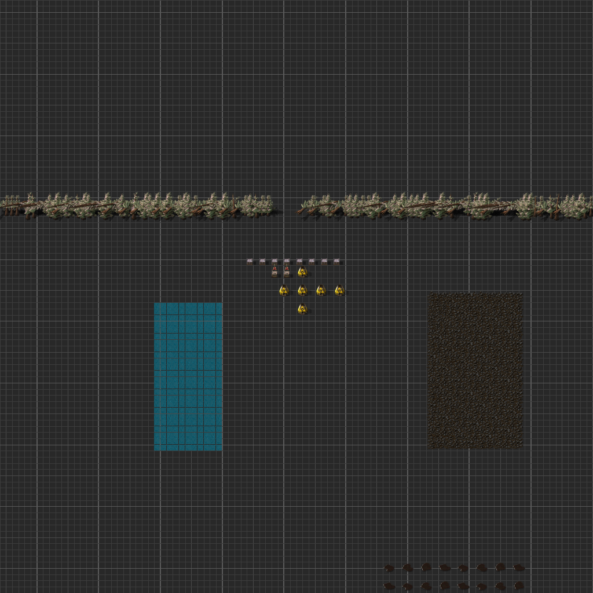

Manual batches remain locally rational
One-shot quantity contracts can be satisfied through mining and hand crafting. The agent receives progress without paying the planning cost of belts, inserters, assemblers, power, and balanced topology.

Open evaluation environment
A persistent Factorio benchmark for measuring whether AI agents can discover production paths, build end-to-end automation, and scale sustainable output.
Live evaluation capture · August 31, 2026
Observed state
Muse Spark 1.2 produced electronic circuits, but the placed topology remained sparse and mostly stalled. The run exposed a benchmark-design problem rather than a missing crafting capability.
Snapshot counts are descriptive, not a score. At capture time, three drills were blocked, one lacked fuel, and the inserters were waiting for source items.
Iteration 01
The harness became substantially more capable and observable. That made the remaining incentive problem easier to see.
One-shot quantity contracts can be satisfied through mining and hand crafting. The agent receives progress without paying the planning cost of belts, inserters, assemblers, power, and balanced topology.
Depot inserters can automate delivery while all upstream production remains manual. Delivery automation must not stand in for autonomous resource extraction and production.
Contract receipts, state retrieval, resumable snapshots, bounded tool history, memory, and optional vision are now available. The agent has better feedback; it still chooses the cheaper manual policy.
Counting delivered items rewards the output but misses the productive system behind it. The next design should measure expansion of a sustainable production frontier.
Capability chain
Proposed next iteration
Replace the customer model as the dominant objective with a progression that makes durable productive capability the shortest path to success. Customer demand can remain a probe, but it should no longer define progress.
Find viable recipes, technologies, resources, and production paths using the environment's state and reference tools.
Measure: breadth of newly reachable outputs
Prove that extraction, transport, crafting, and delivery continue without agent actions or manually supplied buffers.
Measure: autonomous production closure
Raise per-minute targets and diversify the production mix. Manual crafting should fail naturally as sustained demand exceeds player throughput.
Measure: sustained output and reliability
Measurement direction
A target such as 200 electronic circuits per minute is more informative than a request for 200 circuits. Candidate factories can be detected cheaply from recent production statistics, cloned, and verified under an accelerated autonomous holdout with no agent actions.
Scale then becomes meaningful: higher rates, longer randomized holdouts, broader production mixes, and continued operation of earlier lines. The benchmark can distinguish a handcrafted burst from a reusable factory.